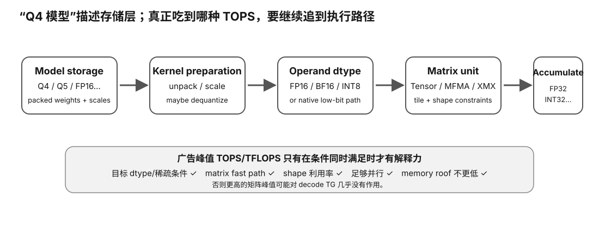

开始前，你应该已经知道普通 GPU core/lane 负责标量或向量算术，也见过 GEMM/矩阵乘法在 LLM 中承担大量计算；同时知道 FP16、BF16、INT8、4-bit quantization 这些词描述的可能是不同层次的数值表示。
一张卡写着几百甚至上千 TOPS，为什么跑 4-bit LLM 时不一定比另一张卡快那么多？真正要判断的是：你的 runtime 是否把目标算子映射到了该卡支持的矩阵路径、使用了什么输入/累加格式，以及实际瓶颈是不是计算吞吐。
普通向量/标量单元更像：
一个线程/一个 lane → 一小撮独立 arithmetic
矩阵单元更像：
A tile × B tile + accumulator tile
一条 matrix instruction 代表一整个小矩阵 tile 的大量乘加，因此对规则 GEMM 很高效。
FP16/BF16 input → matrix multiply → FP32 accumulation
或者：
INT8 input → matrix multiply → INT32 accumulation
低精度输入省带宽、提高矩阵吞吐；更宽 accumulator 用来承受许多乘积相加后的范围和误差。
本地 LLM 最容易混淆：
GGUF Q4 = weights stored around low-bit representation
但 runtime 可能执行：
load Q4 block → apply scale / dequantize → FP16/BF16 tile → FP16/BF16 matrix instruction → wider accumulator

| 代际 | 你该记住什么 |
|---|---|
| Volta | Tensor Core 进入 CUDA GPU；FP16 matrix acceleration 成为新路径 |
| Turing | 整数/更低 bit inference matrix modes 扩展 |
| Ampere | BF16、TF32、FP64 Tensor Core；第三代 Tensor Core |
| Hopper | 第四代 Tensor Core；FP8 + Transformer Engine |
| Blackwell | 第五代 Tensor Core；FP4-class 低精度继续扩展 |
这里学的是代际方向，不背某张 SKU 的峰值数字。精确型号表放到动态情报。
TF32 是 Tensor Core 的计算精度模式：保持类似 FP32 的范围，但降低输入有效精度，再使用 FP32 accumulator。
它不是“把模型文件保存成一个 TF32 权重格式”。
8 bit 太少，不可能同时拥有 FP16 那样的范围和精度。实际 FP8 体系会选择不同 exponent/mantissa 分配，并配合 scale。
tensor → measure / choose scale → scale into FP8 range → FP8 compute → wider accumulation
这说明低精度不是“少几个 bit 就白送 2×”。scale、layout、cast 都会产生成本。
AMD CDNA/ROCm 的矩阵硬件常以 MFMA（Matrix Fused Multiply-Add）来描述。
同样问：
input type? accumulator? tile shape? library/kernel? achieved utilization?
不同 CDNA/RDNA 代支持的数据类型不同，精确表属于动态情报。
一张 GPU 可以同时有很多“峰值”：
如果产品页写“AI TOPS”，一定要找脚注：到底是哪一种 precision、是否使用 structured sparsity、是否按 boost clock。
achieved ≤ compute peak × utilization achieved ≤ memory bandwidth × arithmetic intensity
最终取更低的那一个。
many tokens × hidden → large GEMM → many tiles → matrix unit utilization high
one/few tokens × huge weights → small M dimension → poor tile utilization → weight bytes dominate
这时：
memory roof << matrix compute roof
再多 Tensor TOPS 也可能用不上。
因为它首先减少的是：
weights bytes read per generated token
即使 kernel 读 Q4 后解量化成 FP16 再算，显存总线已经少搬了很多数据。
low-bit storage + native low-bit matrix instruction + efficient scale/dequant + good tile shape + enough parallel work + enough memory bandwidth
缺一项，都可能离理论 TOPS 很远。
Apple 的 GPU、Neural Engine、统一内存不能拿一个 TOPS 数字机械映射到 NVIDIA Tensor Core。后续 Apple 专节会单独拆 Metal GPU 路径与 ANE 路径。
硬件门槛：L0；真机增强路径 L1/L2。
成本：0 元主路径。
风险：safe。
替代路径：无对应矩阵硬件也能完成理论 roof 与 shape 实验；真机只用于验证 kernel/precision 路径。
先做 Experiment 21：TOPS vs Roofline；有 GPU 时做 Experiment 22：real matmul shape / precision。
选一个以后可能使用的模型量化，写出从“文件权重表示”到“runtime kernel / matrix instruction / accumulator”的四层映射；未知处明确写 UNKNOWN。
NVIDIA Tensor Core、AMD Matrix Core/MFMA、Intel XMX 名字不同，但判断方法相同：operand dtype + tile/shape + instruction/kernel availability + accumulation + memory roof。
LLM 一次推理除了矩阵乘，还包括：
weight/KV memory traffic normalization activation sampling attention quant/dequant kernel launches synchronization
只有其中适配矩阵单元的数据路径，才可能接近对应峰值。decode 还常常先撞带宽 roof。
矩阵单元可能以较低精度输入进行乘法，但使用更高精度 accumulator。所谓“FP16/INT8/FP8 tensor performance”必须看具体输入、accumulate、sparsity 与结构条件。
用公开架构资料做 capability matrix：支持哪些输入/accumulate 类型、哪些 runtime 能调用。不要把理论 TOPS 写成实测性能。